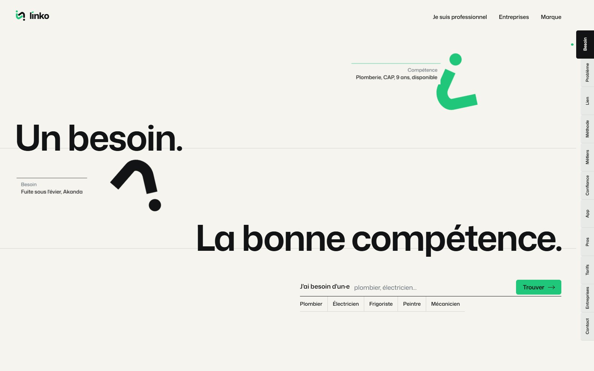
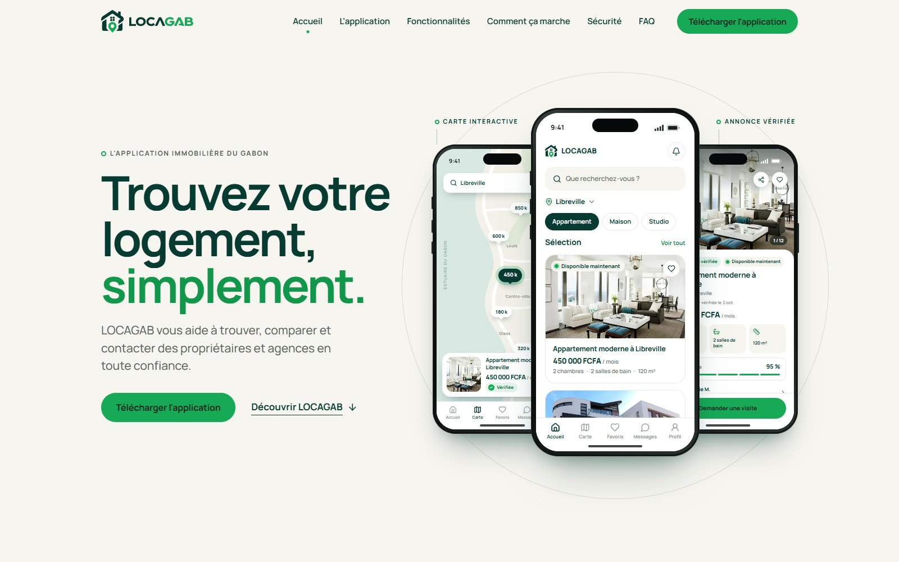
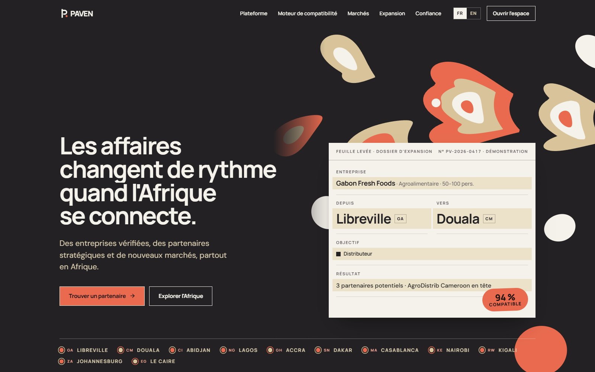
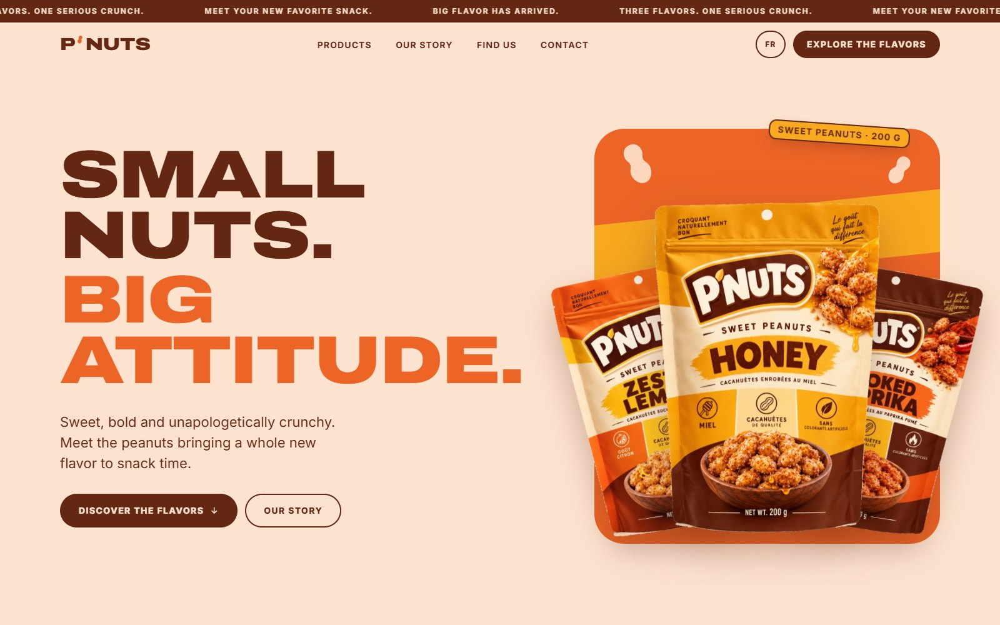
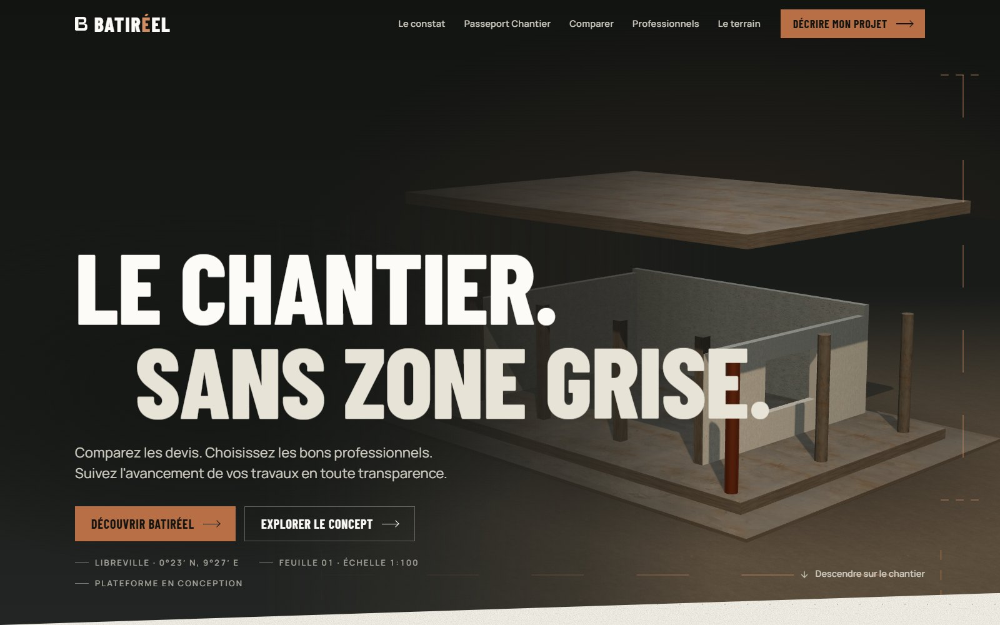
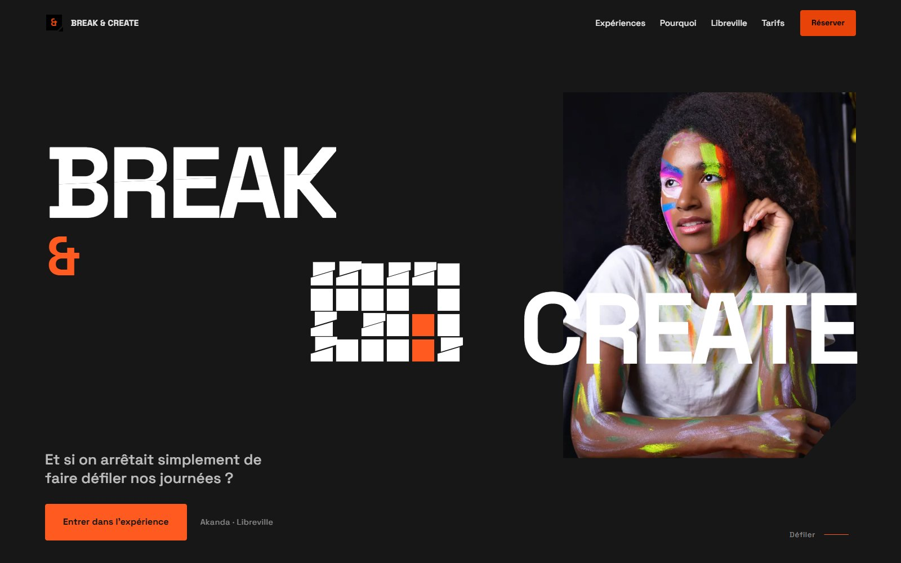

Tout commence par une décision claire.
Recherche de nom, positionnement, cible, valeurs et vision : la réflexion qui précède toute création. Nous posons ce qui doit tenir dans le temps avant de dessiner quoi que ce soit.

MÉTHODE AURA est un studio de marque. Branding, identité visuelle et digitalisation pour transformer les marques en expériences.
MÉTHODE AURA accompagne les entreprises et les entrepreneurs avant, pendant et après la naissance de leur identité — de la réflexion stratégique la plus fine jusqu'au moindre support déployé sur le terrain. Notre mission ne s'arrête pas à un beau logo : nous construisons des marques cohérentes, reconnaissables, mémorables, et capables d'évoluer dans le temps.
Tout commence par une décision claire.
Recherche de nom, positionnement, cible, valeurs et vision : la réflexion qui précède toute création. Nous posons ce qui doit tenir dans le temps avant de dessiner quoi que ce soit.
Une marque, c'est une architecture.
Territoire, promesse, ton de voix et direction artistique : nous structurons la marque pour qu'elle reste reconnaissable à chaque point de contact, et pour que chacun puisse l'appliquer.
Ce que l'on voit, et ce que l'on retient.
Logo, déclinaisons, couleurs, typographies et charte graphique : l'univers visuel complet de la marque, du concept à la charte, jusqu'au packaging et à la signalétique.
La marque, partout où elle se vit.
Sites internet, expérience digitale, réseaux sociaux et outils numériques pensés pour accompagner la croissance, avec la même cohérence que sur le terrain.
Une marque ne se contente pas d'être vue. Elle doit être ressentie.
Motion, contenus, activations : chaque point de contact devient un moment de marque. Nous faisons vivre l'identité dans le temps, et nous la faisons évoluer avec vous.
Chaque marque naît d'un processus clair, de la première question jusqu'à l'expérience vécue.
Écouter, questionner, analyser : votre marché, vos publics, votre ambition. Un diagnostic avant tout dessin.
Positionnement, plateforme et architecture de marque : le socle qui tiendra dans le temps et guidera chaque choix.
Identité visuelle, système graphique, ton de voix : l'univers prend forme, du concept jusqu'à la charte.
Print, signalétique, packaging, site, réseaux : la marque se retrouve partout, à l'identique, prête à être appliquée par tous.
La marque devient une expérience : elle se vit, se mesure et évolue avec vous. Du concept à l'impact.
Sept marques accompagnées du concept à l'écran : la même méthode, des univers différents.

02 LINKO Un besoin, la bonne compétence : LINKO met en relation les particuliers, les entreprises et les professionnels qualifiés au Gabon. Une identité vert signal sur papier, des titres en bas de casse et une recherche qui tient en une phrase. Voir le site
03 LOCAGAB L'application immobilière du Gabon : annonces vérifiées, carte interactive, contact direct avec les propriétaires et les agences. Un site vitrine, une charte graphique et un film de trente secondes pour accompagner le lancement. Voir le site
04 PAVEN Une infrastructure de mise en relation entre entreprises africaines : compatibilités expliquées critère par critère, expansion vers de nouveaux marchés, espaces de négociation. Identité, page d'accueil, treize écrans produit et film de présentation. Voir le site
05 P’NUTS Des cacahuètes sucrées en trois saveurs, lancées au Gabon avec une attitude. Quatre couleurs, une typographie géante, des champs de couleur cousus en biais et les vrais sachets au centre : un site bilingue avec un labo des saveurs interactif, prêt pour la distribution. Voir le site
06 BATIRÉEL « Le chantier. Sans zone grise. » Une plateforme gabonaise pour comparer les devis, choisir les bons professionnels et suivre l’avancement des travaux. Direction artistique matière et structure, villa qui se construit en 3D dans le hero, Passeport Chantier et comparateur de devis démontrés, film narratif de présentation. Voir le site
07 BREAK & CREATE Paint Room et Release Room à Akanda : on peint, on casse, on respire. Deux couleurs seulement, un mot-symbole fracturé par une coupe diagonale, un système de fragments qui se recomposent. Charte graphique de quarante planches, logos et site d’une page qui raconte l’expérience de Break à Create. Voir le siteLa méthode s'adapte à chaque secteur, avec la même exigence de cohérence.
Une marque ne se résume pas à un logo.
Elle se construit.
Elle se structure.
Elle se ressent.
Elle évolue.
Elle devient une expérience.
Une marque, ce n'est pas un logo. C'est une décision que vous prenez à chaque point de contact.
Manifeste du studio
Parlons de votre projet — stratégie, identité, digital, ou les trois.
Réponse sous deux jours ouvrés.